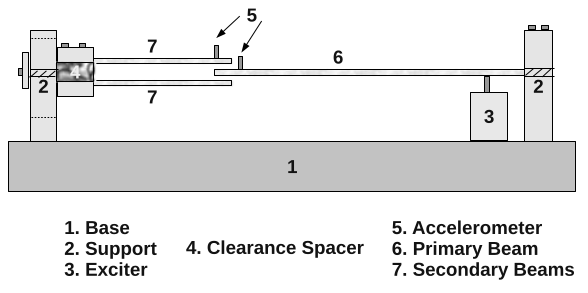

Question about using the WBM for the zeroth harmonic
Let's take the damped Euler-Bernoulli Beam in a cantilevered configuration:
\begin{align*} \rho A_r \ddot{u} + \alpha \rho A_r \dot{u} + E I u'''' = 0\quad &x\in(0, \ell)\\ u = u'=0\quad &x=0\quad \text{fixed end}\\ E I u'' = 0\quad & x=\ell\quad \text{free moment}\\ E I u''' = f(x,t)\quad &x=\ell\quad \text{excitation}. \end{align*}\(\dot{(\cdot)}\) and \((\cdot)'\) denote derivatives w.r.t. time \(t\) and space \(x\) respectively.
- The dispersion relationship here is \[ k(\omega) = {\left[\frac{\rho A_r}{E I} \omega \frac{(\omega+j\alpha)}{(1-j\beta\omega)}\right]}^{1/4}. \] \(j\) is the imaginary root \(\sqrt{-1}\).
- The wave-based description of the solution is, \[ u_n(x,t) = u_0(x) + \sum_{n=1}^H \left(a_n^+ e^{k_nx} + a_n^- e^{-k_nx} + b_n^+ e^{jk_nx} + b_n^- e^{-jk_nx} \right) e^{-j n\Omega t} + c.c. \] Here, \(n\) denotes the harmonic, and \(H\) is the truncation order.
- In the above, \(u_0(x)\) is expressed separately since it has no time-dependence, and needs to be considered separately.
- The equations of motion of the static part (in the measurable part of the domain), and its general solution is, \[ u'''' = 0 \implies u(x) = A_0 + x A_1 + x^2 A_2 + x^3 A_3 \quad x\in(0,\ell). \] This is completely different from the (spatial) exponential ansatz in the WB context (see #3 above).
- We will now resort to using the above cubic polynomial form and derive transmission, b.c., and force balance equations to accommodate the static parts for the harmonic balance.
- Transmission between points \(x_A\) and \(x_B\).
Equating the descriptions about \(x_A\) and \(x_B\) we have,
\[ A_0 + (x-x_A) A_1 + (x-x_A)^2 A_2 + (x-x_A)^3 A_3 = B_0 + (x-x_B) B_1 + (x-x_B)^2 B_2 + (x-x_B)^3 B_3. \]
Equating the polynomial coefficients separately we have,
\begin{align*} \begin{bmatrix} A_0 - x_A A_1 + x_A^2 A_2 - x_A^3 A_3\\ A_1 - 2x_A A_2 + 3x_A^2 A_3\\ A_2 -3x_A A_3\\ A_3 \end{bmatrix} = \begin{bmatrix} B_0 - x_B B_1 + x_B^2 B_2 - x_B^3 B_3\\ B_1 - 2x_B B_2 + 3x_B^2 B_3\\ B_2 -3x_B B_3\\ B_3 \end{bmatrix},\\ \implies \begin{bmatrix} 1 & -x_A & x_A^2 & -x_A^3\\ 0 & 1 & -2x_A & 3x_A^2\\ 0 & 0 & 1 & -3x_A\\ 0 & 0 & 0 & 1 \end{bmatrix} \begin{bmatrix} A_0\\ A_1\\ A_2\\ A_3 \end{bmatrix} = \begin{bmatrix} 1 & -x_B & x_B^2 & -x_B^3\\ 0 & 1 & -2x_B & 3x_B^2\\ 0 & 0 & 1 & -3x_B\\ 0 & 0 & 0 & 1 \end{bmatrix} \begin{bmatrix} B_0\\ B_1\\ B_2\\ B_3 \end{bmatrix} \end{align*}- This presents the analog to the "transmissibility" relationship for the non-zero frequency case.
- Boundary Conditions can be quite trivially specified by polynomial evaluation. In this case, at the left end (around \(x_A=0\)), these are, \[ \begin{bmatrix} 1 & 0 & 0 & 0\\ 0 & 2 & 0 & 0\\ 0 & 0 & 2 & 0\end{bmatrix} \begin{bmatrix} A_0\\ A_1\\ A_2\\ A_3 \end{bmatrix} = \begin{bmatrix} 0\\ 0\\ 0 \end{bmatrix}. \]
- Boundary Excitation can also be written out simply. In this case, around (\(x_B=\ell\)) we have \[ 6 E I \begin{bmatrix} 0 & 0 & 0 & 1\end{bmatrix} \begin{bmatrix} B_0\\ B_1\\ B_2\\ B_3 \end{bmatrix} = F_0, \] where \(F_0\) denotes the zeroth harmonic of the excitation.
- Transmission between points \(x_A\) and \(x_B\).
Equating the descriptions about \(x_A\) and \(x_B\) we have,
\[ A_0 + (x-x_A) A_1 + (x-x_A)^2 A_2 + (x-x_A)^3 A_3 = B_0 + (x-x_B) B_1 + (x-x_B)^2 B_2 + (x-x_B)^3 B_3. \]
Summarily, we have 8 unknowns \(\{A_i\}_{i=0,\dots,3}\) and \(\{B_i\}_{i=0,\dots,3}\), with
- 4 "transmission" equations (see #6a above)
- 3 boundary conditions, and
- 1 excitation,
making the system square.
- I'm listing "excitation" separately from boundary conditions since I consider them separate in my implementation of the WBM (I have nonlinear joints and excitation handled similarly).
- All in all, this is merely combining the static analytical solution built up using piecewise polynomials (can be generalized to any 1D PDE) that is solved along with the WB equations. For the linear case, no coupling between the static and oscillatory components is expected. But in the nonlinear case, we expect the nonlinearity to couple these two.
Our example of the impacting cantilevers is symmetric, but only for the primary beam!. For the secondary beams, the problem is strongly asymmetric, meaning that we need to admit the zeroth harmonic for accuracy. See 1 below that shows a schematic of the system.

Figure 1: A Picture of the model